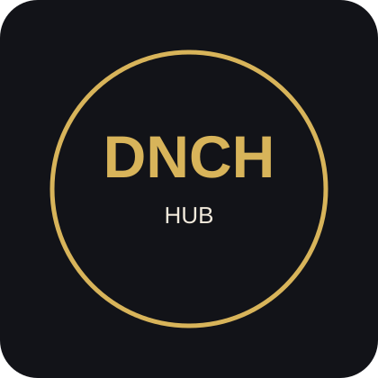

Полезно всеки ден
Създаваме услуги, към които хората искат да се връщат, дори без токени или награди.
Музика. Идеи. Общност. Игри. Полезни знания. Едно свързано място, в което денят започва с нещо положително.
За едно по-светло утре. Създавай и печели. · Проект в ранен етап, развиван открито.

Три кратки предложения за деня, 24 идеи за разглеждане и любими, които се пазят само на твоето устройство.
DNCH започна като проект за токен в Solana, развиван с участието на общността. По-голямата ни цел е приветлива дигитална екосистема, където хората откриват музика, споделят идеи, четат полезно съдържание и играят — независимо дали притежават криптовалута.
Създаваме услуги, към които хората искат да се връщат, дори без токени или награди.
Приемаме предложения, мнения и принос от хора с различни интереси и от различни държави.
Ясно разграничаваме готовите функции от идеите в разработка. Без обещания за финансова възвръщаемост.
Искаш да разбереш как започна всичко? Прочети нашата история →
Тези взаимно свързани продукти са част от нашия план; това не означава, че всички вече работят.
Международна музика, жанрови предавания, анкети и идеята точките от общността да осигуряват предварително одобрено ефирно време.
Музикалните лицензи и правата за излъчване трябва да бъдат уредени преди старта.
Разговори по свободни теми, предложения, гласувания и Лаборатория за идеи, в която общността оформя бъдещите проекти.
Интересни новини, обучение, практични знания и положително ежедневно съдържание с посочени източници и редакторска проверка.
Мобилна драг рейсинг игра с тунинг, развитие и състезания. На първо място трябва да бъде забавна игра.
Точки за смислен принос и участие в общността, отделни от истинските DNCH токени в блокчейна.
Разумно използване на AI за преводи, обобщения, музикални препоръки, модерация и игри.
DNCH Community: Подготвяме истински форум за свободни дискусии и идеи. Виж категориите и напредъка →
Искаме място за най-различни интереси — не само за крипто. Предложи идея за екосистемата, музикално предаване, интересна тема или напълно нов проект.
Временен канал за предложения: необходим е GitHub профил. Публичният форум на DNCH е планиран, но още не работи.
Идеите са добре дошли, но изпращането им не гарантира изпълнение или награди.
Ще пускаме полезните услуги поетапно, ще се вслушваме в първите потребители и ще надграждаме само когато основата работи добре.
Проверка на токена и сайта, документиране на решенията и достоверно описание на напредъка.
Пускане на DNCH Hub, новини за развитието, подготовка на форум и редакционен процес.
Проверка на аудиторията, лицензите, стрийминг технологията и приложенията за Android/iOS.
Прототип на Drag Racing, полезни AI функции и евентуална законосъобразна интеграция на токена.
Тук е информацията за токена от досегашния сайт. Проверявайте я независимо в блокчейна преди използване.
4.2B
Посочено общо количество
9
Десетични знаци
Solana
Блокчейн мрежа
DNCH
Символ на токена
Незадължителна проверка на портфейла. Тук няма трансфери, стейкинг, покупки, награди или вход в профил.
Няма връзка
Свързването е по избор. Според браузъра и достъпа до RPC проверката на баланса може да не работи.
—
Това е показване на баланса, а не система за точки или финансово обещание.
Точките на общността и мисиите още не работят. Няма да показваме измислени точки като спечелени. За бъдещи награди ще са необходими ясни правила, проверка и правен анализ.